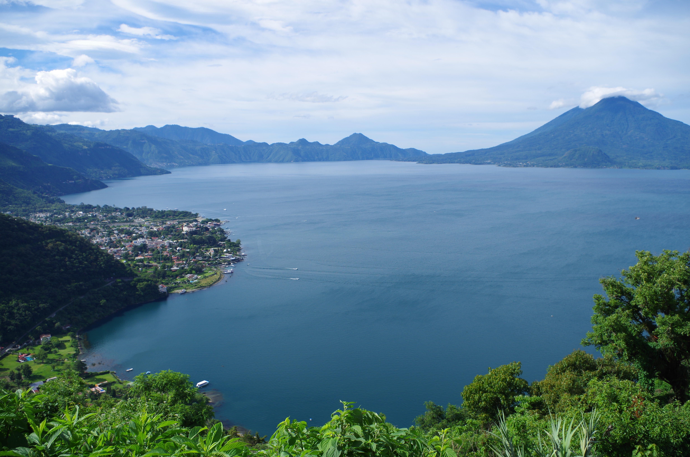
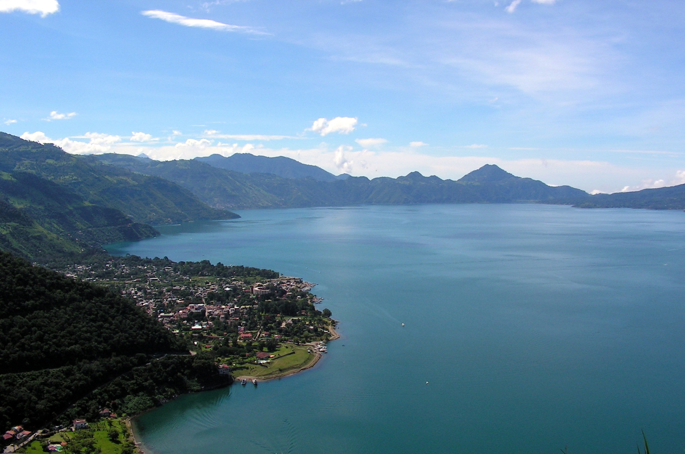

Descripción del lugar
El Lago de Atitlán se encuentra en el departamento de Sololá, en el altiplano de Guatemala. Está rodeado por los volcanes Atitlán, Tolimán y San Pedro, además de varios pueblos mayas con tradiciones, idiomas, tejidos y gastronomía propios. Sus aguas azules, los paisajes montañosos y los recorridos en lancha lo convierten en uno de los destinos turísticos más representativos del país.
Durante la excursión se visitarán Panajachel, San Juan La Laguna y Santiago Atitlán. Los viajeros podrán conocer mercados artesanales, talleres de textiles, miradores, calles llenas de arte y espacios naturales con vistas inolvidables.
Galería de imágenes
Paisajes y cultura alrededor del lago


Fotografías tomadas de Wikimedia Commons: LarissaGomez, Richard Baxter, Axcordion y Jaime. Banner: Wikimedia Commons.
{kind=link}
{kind=link}
{kind=link}
{kind=link}
{kind=link}
Tabla de itinerarios
| Fecha | Horario | Actividad | Lugar |
|---|---|---|---|
| 05:30 - 08:30 | Salida y viaje hacia Sololá | Ciudad de Guatemala - Panajachel | |
| 09:00 - 10:00 | Desayuno y bienvenida | Calle Santander, Panajachel | |
| 10:30 - 12:30 | Paseo en lancha por el lago | Panajachel - San Juan La Laguna | |
| 13:00 - 16:30 | Almuerzo y visita a talleres de textiles y cacao | San Juan La Laguna | |
| 17:30 - 19:00 | Atardecer, cena y descanso | Panajachel | |
| 07:00 - 08:00 | Desayuno | Panajachel | |
| 08:30 - 13:00 | Recorrido cultural y visita a la iglesia | Santiago Atitlán | |
| 14:00 - 18:00 | Almuerzo, compras y viaje de regreso | Panajachel - Ciudad de Guatemala |
Lista de actividades
- Realizar caminatas por senderos y miradores.
- Practicar kayak en zonas autorizadas del lago.
- Visitar galerías de arte y murales comunitarios.
- Conocer plantaciones y procesos artesanales de café.
- Observar aves y fotografiar los volcanes.
- Probar platillos típicos de la región.
- Comprar artesanías elaboradas por artistas locales.
- Aprender sobre tintes naturales y tejidos mayas.
Recomendaciones
- Llevar ropa cómoda, gorra y calzado para caminar.
- Usar protector solar y llevar agua pura.
- Portar una chaqueta para la tarde y la noche.
- Respetar las costumbres de cada comunidad.
- No dejar basura en el lago ni en los pueblos.
- Solicitar permiso antes de fotografiar a personas.